I started by performing a full TCP port scan against the target to identify exposed services and gather banner information.
nmap -sVC -p- --open -sS --min-rate 5000 -v -n --stats-every=5s -Pn -oN instant_scan 10.10.11.37
Based on the scan results, the application relied on a specific domain name, which needed to be added to the local /etc/hosts file to ensure proper resolution.
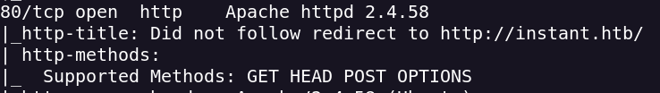
I attempted to enumerate subdomains and directories, but this did not reveal any immediately interesting attack vectors.
While exploring the main web application, I noticed that it allowed downloading an Android application package (.apk). Since mobile applications often contain hardcoded secrets or endpoints, I downloaded the file for static analysis.
Using jadx-gui, I decompiled the APK to review its source code and search for sensitive information.
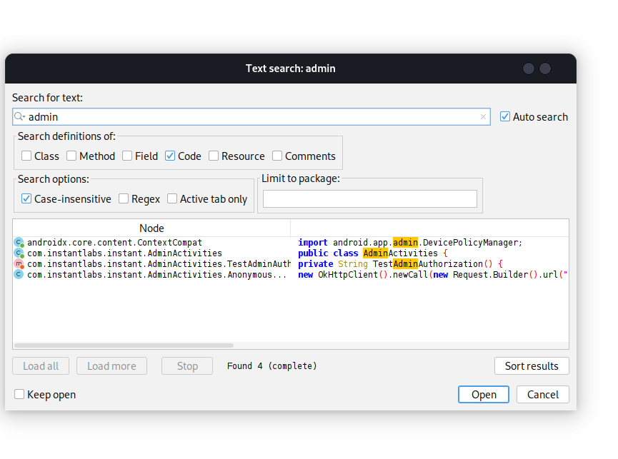
Within the AdminActivities class, I discovered a hardcoded JSON Web Token (JWT) associated with administrative functionality.
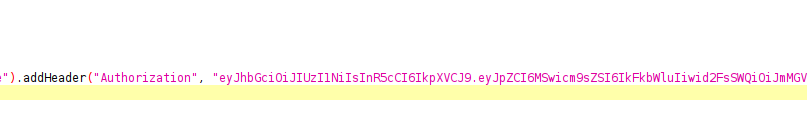
The APK analysis also revealed two additional subdomains referenced by the application.
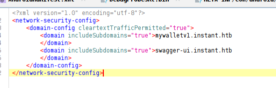
The first subdomain did not expose any interesting functionality. However, the second one, swagger-ui.instant.htb, exposed a Swagger interface where application logs could be viewed.
I intercepted a GET request to this endpoint using Burp Suite in order to inspect both the request structure and the server response.
By supplying the previously discovered admin JWT, I identified a Local File Inclusion vulnerability that allowed arbitrary file reads on the server.
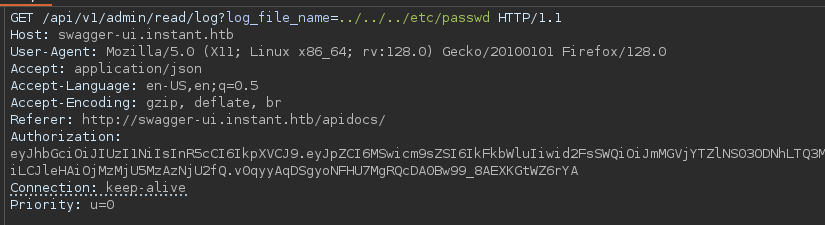
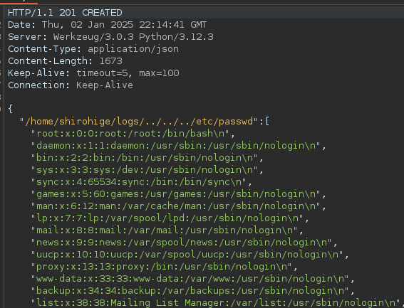
Using this vulnerability, I enumerated system users and identified a valid user account named shirohige.
I then leveraged the LFI to read the private SSH key of this user directly from the filesystem.
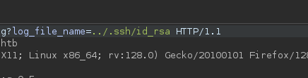
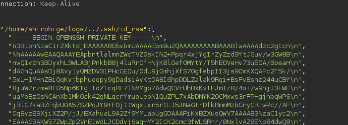
After extracting the private key, I saved it locally and used it to authenticate to the target system via SSH as the user shirohige.
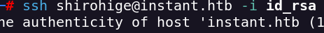
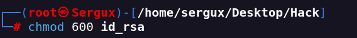
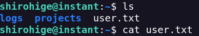
Once logged in, I began local enumeration of the filesystem. During this process, I discovered a directory named backups, which appeared to contain archived data.
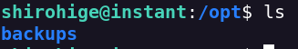
Inside this directory, I found a backup file related to application sessions.
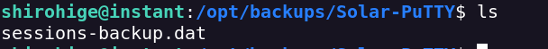
To analyze the backup further, I transferred the session backup file to my attacking machine using a temporary Python HTTP server and wget.
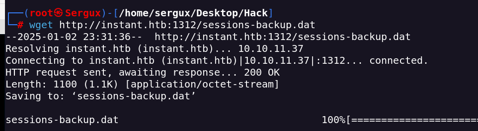
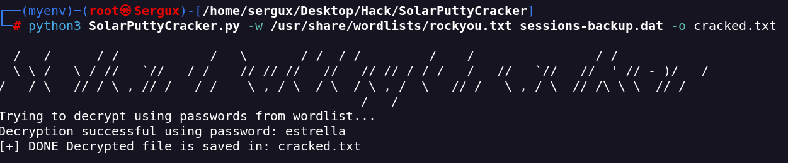
After processing and cracking the extracted data, I recovered credentials belonging to the root user.
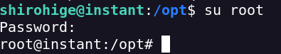
With valid root credentials obtained, full administrative access to the system was achieved, completing the compromise.